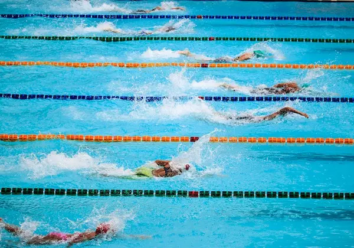

Vamos falar sobre natação!

A natação é uma prática esportiva que envolve o movimento através da água usando os membros do corpo e sem a ajuda de nenhum instrumento artificial. É tanto uma habilidade vital, que pode salvar vidas, quanto um esporte popular que oferece uma ampla gama de benefícios para a saúde e o bem-estar.
A natação é uma das formas mais antigas de exercício, com pinturas rupestres sugerindo práticas de natação desde a pré-história. Evoluiu ao longo do tempo, tornando-se um esporte competitivo no século 19. A natação moderna foi uma das primeiras modalidades dos Jogos Olímpicos contemporâneos, estreando em 1896 para homens e em 1912 para mulheres.
Existem quatro estilos principais de natação reconhecidos internacionalmente em competições:
Crawl ou Livre: Caracterizado por ser o estilo mais rápido. Os nadadores alternam os braços em movimentos circulares e chutam os pés em um movimento de flutter.
Costas: Nadado de costas, com movimentos alternados de braço e um flutter kick.
Peito: Requer que os braços se movam em uníssono em um movimento circular, enquanto as pernas fazem um movimento de sapo.
Borboleta: Talvez o estilo mais exigente fisicamente, os braços se movem juntos para frente e para trás acima da água em um movimento circular, com um poderoso movimento de golfinho das pernas.
Medley: combina todos os quatro estilos em uma única prova.